Plugin Sistema
El plugin de Sistema es
parte de la solución UML para la realización de
diagramas. Permite
modelar la abstracción de los sistemas de software de alto nivel,
mostrando su estructura general abarcando toda su extensión mediante
sistemas y subsistemas distribuidos según los correspondientes niveles
de abstracción.
Los elementos propios que maneja este diagrama son:
- Sistema
- Dependencia
Creación de un nuevo Diagrama de Sistemas.
Colosoft
soporta el Plugin Sistema mediante la creación de un nuevo diagrama de
Sistemas.
Para la creación de un nuevo diagrama usando el Plugin se selecciona en
el Marco de Expresión: Nuevo, Ingeniero de Sistemas, Diagrama de
Sistemas, como se observa en la Figura 1. Se ingresan
los datos correspondientes al diagrama en la ventana emergente.
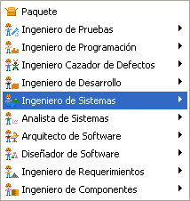 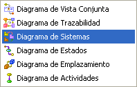
Figura 1. Creación de un diagrama de sistemas
Barra de
herramientas del Plugin de Sistema:
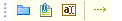
Figura 2. Barra del plugin de sistema
Sistema: Es un conjunto de elementos organizados para cumplir algún proposito y que son realizados a través de un conjunto de diferentes modelos funcionales del sistema, dichos modelos estan constituidos por diversos elementos como clases, interfaces, componentes, nodos, las posibles relaciones de estos, etc.
Para Crear un nuevo Sistema, haga clic en el Icono sistema de la barra de herramientas del Plugin y luego haga clic en un espacio en blanco del diagrama.
Figura 3. Botón de creación de un sistema
Al hacer clic, se despliega la ventana de especificación del Sistema, como se muestra en la Figura 4.
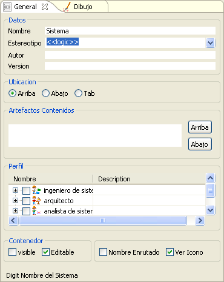
Figura 4. Datos de creación del sistema
En ella se pueden establecer el nombre del Sistema y se puede estereotiparlo de forma personalizada o seleccionando una opción de la lista:
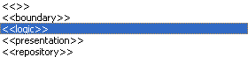
Figura 5. Estereotipos para la creación un sistema
Puede agregarle perfiles que muestren iconos decorativos a los Sistemas:
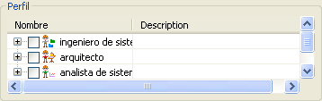
Figura 7. Perfiles disponibles para la creación del sistema
Seleccione la ubicación gráfica del Nombre del Sistema según su ubicación como sigue:
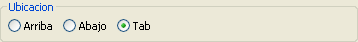
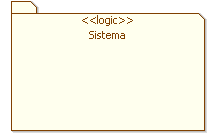
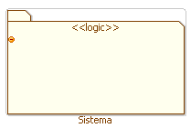
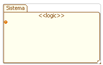
Figura 8. Ubicaciones para la etiqueta de sistema
Especifique las opciones del Contenedor, seleccione visible y editable para poder establecer el tamaño del elemento gráfico del sistema, arrastrando de una de sus esquinas:
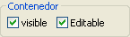
Figura 9. Propiedades del contenedor
El sistema creado luce como se muestra en la Figura 10.

Figura 10. Representación del sistema sobre el diagrama
Los iconos de expansión permiten crear dependencias desde y hacia otros sistemas.Tambien se pueden crear notas de texto.
Relación de Dependencia: Establezca relaciones entre diferentes sisemas y subsistemas usando una relación de Dependencia.
Para crear una nueva dependencia se hace clic sobre el icono Dependencia y luego se hace clic, primero, sobre el primer Sistema (generalmente de carácter general) y después se hace clic sobre el segundo sistema (generalmente más específico)
Figura 11.Creación de una relación de dependencia
Inmediatamente se abre la ventana de especificación de la nueva relación, desplegando la primera pestaña de Texto en la que se escribe el nombre correspondiente al estereotipo de la relación. Personalice o escoja un estereo tipo predeterminado de la lista desplegable:
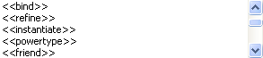
Figura 12. Estereotipos para relación de dependencia
La dependencia entre dos sistemas luce como se muestra en la Figura 13.
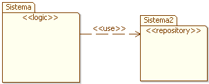
Figura 13. Relaciones de dependencia sobre el diagrama
Subsistemas: Modele subsistemas que contengan un conjunto de elementos con un nivel más especifico de funcionalidad, los subsistemas estan contenidos en otros sistemas, para representarlos siga los pasos de creación de un nuevo sistema pero realice la inserción dentro de un sistema ya existente:
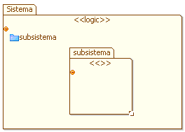
Figura 14. Representación de subsistemas
En la ventana de especificación del Sistema contenedor se pueden ver los subsistemas pertenecientes a este como Artefactos contenidos, como se muestra en la Figura 15.
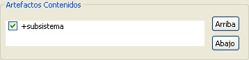
Figura 15. Artefactos contenidos dentro del sistema